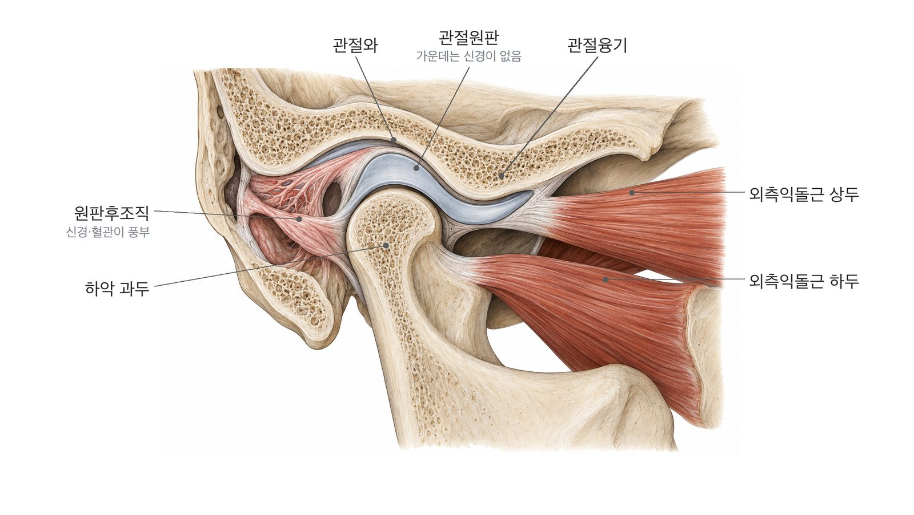

턱관절이 어떻게 움직이는지, 지금 겪는 증상이 턱과 어떤 관계인지
그림과 움직이는 도해로 하나씩 설명합니다.
정상 개구와 소리가 나는 턱을 차례로 비교해 보세요. 자동으로 재생되고, 손잡이를 끌면 원하는 순간에 멈춰서 볼 수 있습니다.
파란 회색 띠가 관절원판(디스크), 빨간색이 앞으로 밀려난 디스크입니다. 소리가 나는 턱의 자세한 설명은 턱 소리 페이지에 있습니다.
귀 바로 앞, 머리뼈와 아래턱뼈가 만나는 자리입니다.

증상을 누르면 설명으로 이동합니다.